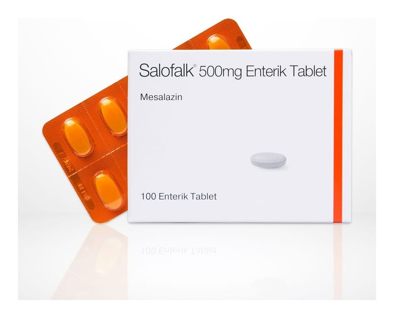

Salofalk 500 mg Enterik Tablet, 50 Adet

Ne için kullanılır
KT · Bölüm 1SALOFALK®’ın etkin maddesi bir anti-inflamatuvar ajan olan mesalazin olup, her bir tablet 500 mg mesalazin içermektedir.
SALOFALK®, açık-sarı – toprak renginde, mat düzgün yüzeyli, oblong, çentiksiz enterik tablettir.
SALOFALK®, “aminosalisilik asit ve benzeri ilaçlar” diye adlandırılan ve “intestinal anti- inflamatuvar” grubuna dahil bir ilaçtır. Bu ilaçlar kalın bağırsaktaki iltihabı önler.
SALOFALK®, karton kutu içinde 50 ve 100 adet enterik tabletlik blister ambalajlarda bulunur. SALOFALK®aşağıdaki durumlarda kullanılır, • Doktorlar tarafından ülseratif kolit olarak bilinen kalın bağırsağın (kolon) iltihaplanması ile oluşan hastalığın akut (ani başlangıçlı) ataklarının tedavisinde ve sonraki atakların (nüks) önlenmesinde, • Crohn hastalığı olarak bilinen kronik (belirtilerin uzun sürmesi) bağırsak iltihabının akut (ani başlangıçlı) ataklarının tedavisinde kullanılır. 2. SALOFALK ’ı kullanmadan önce dikkat edilmesi gerekenler SALOFALK ’ı aşağıdaki durumlarda KULLANMAYINIZ Eğer;
• Mesalazine, salisilik aside, asetilsalisilik asit (örn. Aspirin) gibi salisilatlara veya bu ilacın diğer bileşenlerinden herhangi birine alerjiniz varsa, • Şiddetli karaciğer ve/veya böbrek yetmezliğiniz varsa.
SALOFALK ’ı aşağıdaki durumlarda DİKKATLİ KULLANINIZ Eğer;
• Özellikle bronşiyal astım olmak üzere, geçmişte akciğer ile ilgili bir hastalık geçirdiyseniz, • Mesalazin ile ilgili bir madde olan sülfasalazine karşı geçmişte aşırı duyarlılık hikayeniz varsa, • Karaciğer fonksiyonlarınızda bozukluk bulunuyorsa, • Böbrek fonksiyonlarınızda bozukluk bulunuyorsa, • Mesalazin kullandıktan sonra ciddi bir deri döküntüsü veya deride soyulma, kabarma ve/veya ağız yaraları geliştiyse.
Mesalazin, tuvalet suyundaki sodyum hipoklorit ağartıcı ile temas ettikten sonra kırmızı- kahverengi idrar rengi oluşturabilir. Bu durum mesalazin ve çamaşır suyu arasındaki kimyasal bir reaksiyonla ilgilidir ve zararsızdır.
Diğer önlemler
Tedavi sırasında hekiminiz sizi yakın tıbbi gözetim altında tutacak ve düzenli olarak kan ve idrar tahlilleri yaptıracaktır.
Seyrek vakalarda, ileoçekal bölgede (ince bağırsak ile kalın bağırsağın birleşim yeri) ileoçekal valfin (ince bağırsak ile kalın bağırsak arasındaki geçiş yerinde olan kapağın ismi), çıkarılmasına ilişkin bağırsak rezeksiyonu (bağırsağın bir bölümünün veya tamamının çıkarılması) / bağırsak ameliyatı geçiren hastalarda, bağırsaktan aşırı hızlı bir geçiş nedeniyle SALOFALK®tabletin çözünmeden dışkıda atıldığı gözlenmiştir. Eğer böyle bir durumu fark ederseniz, lütfen doktorunuzu bilgilendirin.
Mesalazin kullanımı ile böbrek taşları gelişebilir. Semptomlar arasında karnın yan kısımlarında ağrı ve idrarda kan yer alabilir. Mesalazin ile tedavi sırasında yeterli miktarda sıvı içmeye özen gösteriniz.
Mesalazin tedavisiyle ilişkili olarak, eozinofili ve sistemik semptomların eşlik ettiği ilaç reaksiyonu (DRESS), Stevens-Johnson sendromu (SJS) ve toksik epidermal nekroliz (TEN) de dahil olmak üzere ciddi cilt reaksiyonları bildirilmiştir. Bölüm 4'te açıklanan bu ciddi cilt reaksiyonlarıyla ilgili belirtilerden herhangi birini fark ederseniz, mesalazin kullanmayı bırakınız ve derhal tıbbi yardım isteyiniz.
Şiddetli veya tekrarlayan baş ağrısı, görme bozukluğu veya kulaklarda çınlama veya uğultu yaşarsanız derhal doktorunuza başvurun.
Bu uyarılar, geçmişteki herhangi bir dönemde dahi olsa sizin için geçerliyse lütfen doktorunuza danışınız.
SALOFALK®’ın yiyecek ve içecek ile kullanılması SALOFALK®yemeklerden 1 saat önce alınmalıdır.
Hamilelik İlacı kullanmadan önce doktorunuza veya eczacınıza danışınız.
Hamile iseniz, hamile olduğunuzu düşünüyorsanız veya hamile kalmayı planlıyorsanız ilacı kullanmadan önce doktorunuza veya eczacınıza sorunuz.
Hamileliğiniz esnasında SALOFALK®’ı sadece doktorunuz söylediyse kullanmalısınız.
Tedaviniz sırasında hamile olduğunuzu fark ederseniz hemen doktorunuza veya eczacınıza danışınız.
Emzirme
İlacı kullanmadan önce doktorunuza veya eczacınıza danışınız.
Emzirme dönemi esnasında da etkin madde (mesalazin) ve metabolitleri anne sütüne geçebildiğinden, sadece doktorunuz söylediyse SALOFALK®’ı kullanmalısınız.
Araç ve makine kullanımı
Araç ve makine kullanımı üzerinde hiçbir etkisi gözlenmemiş ya da ihmal edilebilir düzeyde gözlenmiştir.
SALOFALK ’ın içeriğinde bulunan bazı yardımcı maddeler hakkında önemli bilgiler
Bu ilaç her dozunda doz başına 49 mg sodyum (ana yemek bileşeni/sofra tuzu) içerir. Bu, erişkin için önerilen günlük maksimum diyetle sodyum alım miktarının % 2,45’ine eşdeğerdir.
Diğer ilaçlarla birlikte kullanımı
Bu ilacın etkinliğinde değişikliğe neden olabildiğinden (karşılıklı etkileşim), aşağıdaki ilaçları alıyorsanız veya kullanıyorsanız hekiminizi bilgilendiriniz:
- Azatioprin, 6–merkaptopürin ya da tioguanin (Bağışıklık sistemi hastalıklarının tedavisinde kullanılan ajanlar) - Kan pıhtılaşmasını önleyen belli maddeler (Tromboza karşı kullanılan ilaçlar ya da kan inceltici ilaçlar, örn. varfarin)
Başka ilaçlar alacaksanız doktorunuza veya eczacınıza bildiriniz. SALOFALK®ile sürdürülecek bir tedavi yine de sizin için uygun olabilir. Bu gibi durumlarda doktorunuz sizin için en doğru tedaviye karar verecektir.
Eğer reçeteli ya da reçetesiz herhangi bir ilacı şu anda kullanıyorsanız veya son zamanlarda kullandınız ise lütfen doktorunuza veya eczacınıza bunlar hakkında bilgi veriniz.